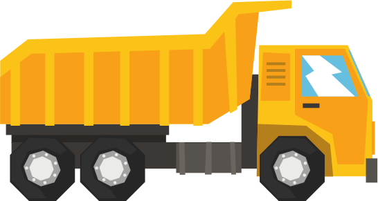

BASIC GSAP.to / from / fromTo
STAGGER
Tween Control
Play
Pause
Reverse
Restart
Transform Origin

Custom transform origin value by clicking on point within the image
Why from() Tweens Glitch and Stop Working
hover